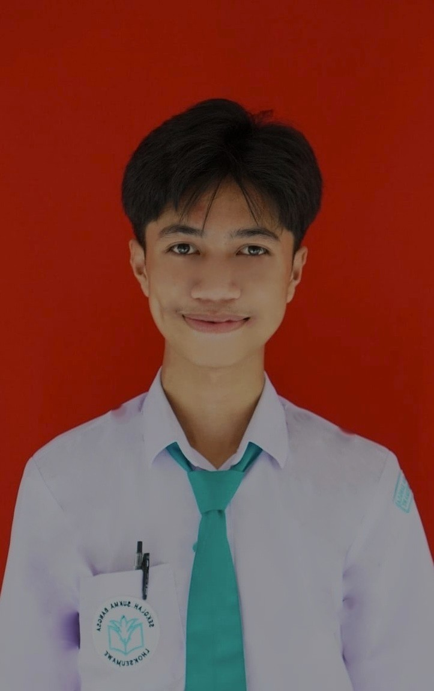
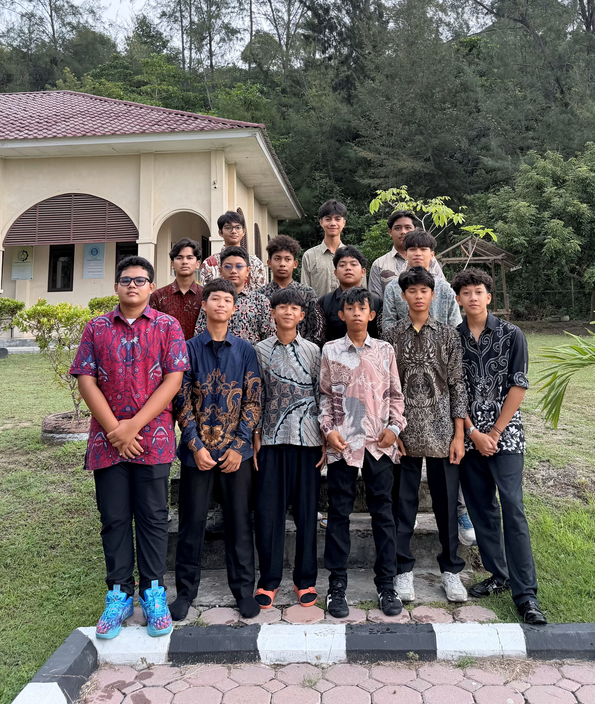
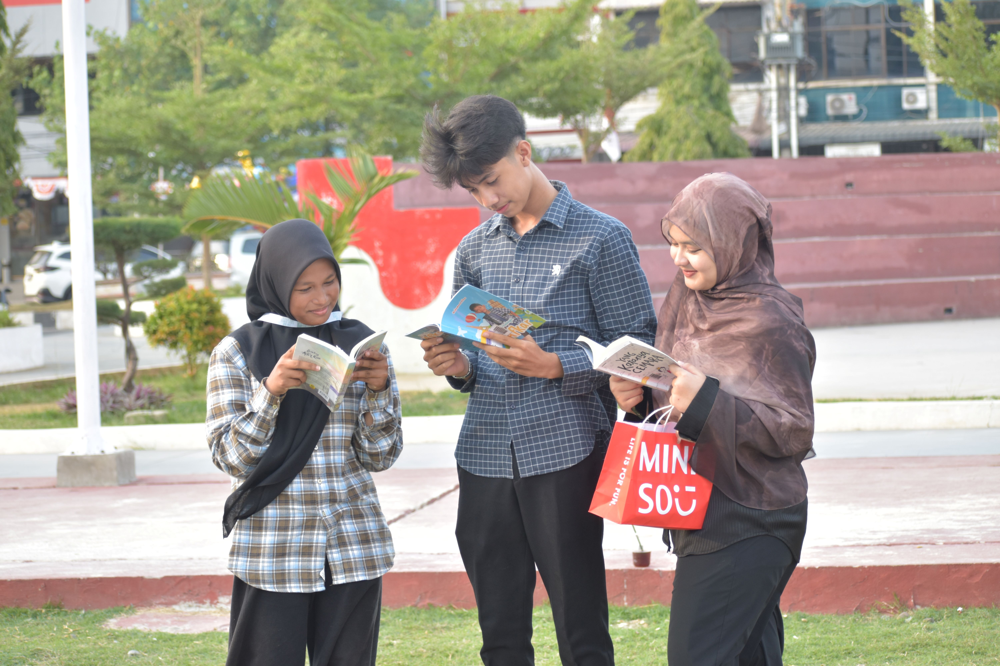
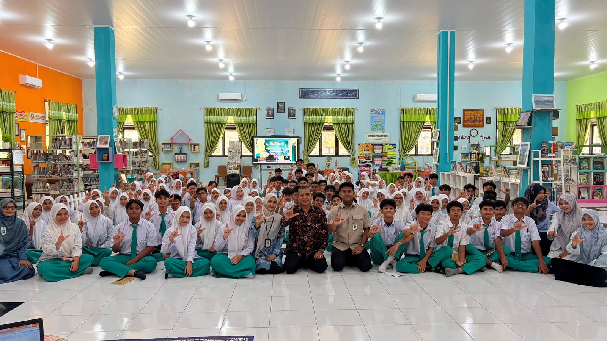
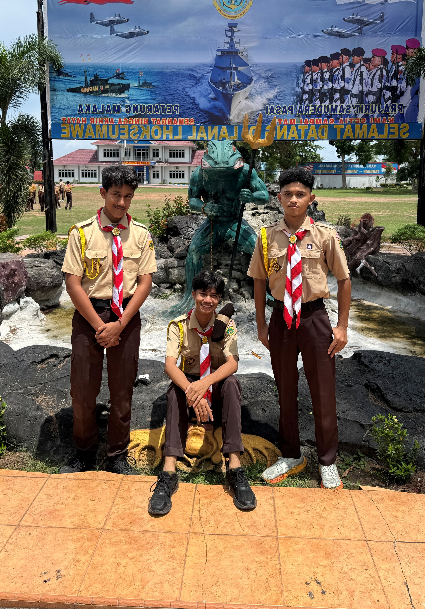
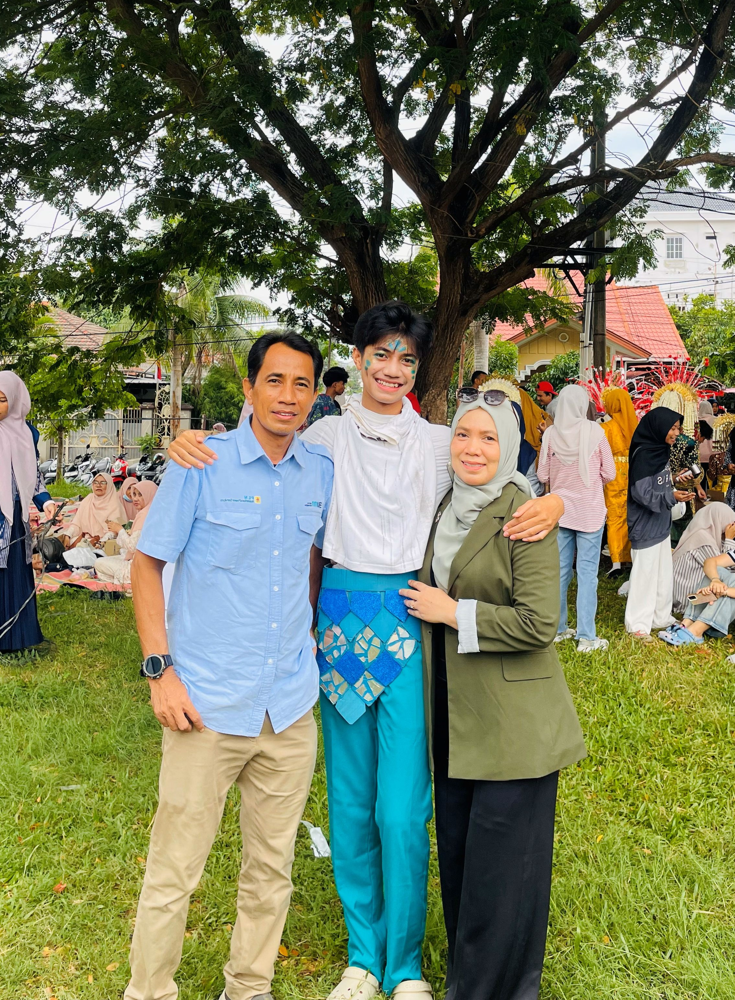
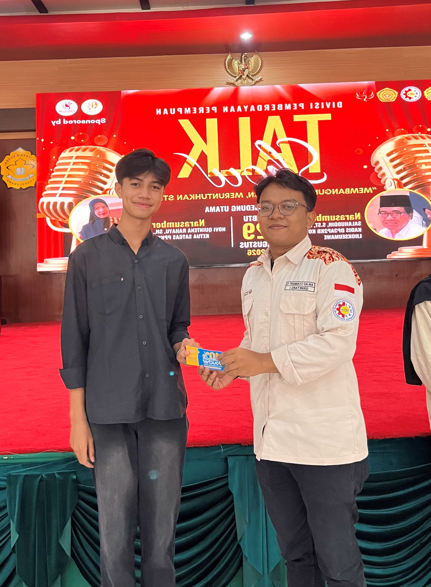

Siswa SMA • Lhokseumawe • Aceh
IndonesiaSaya Syah Daffa ZalvyPutra. Orang yang percaya bahwa usaha kecil yang konsisten bisa membawa kita ke tempat yang besar. Saya berasal dari Lhokseumawe, Aceh, dan ingin terus belajar, berkarya, serta membanggakan daerah asal saya.
Saya suka memasak, belajar hal baru, menulis dan berharap bisa bermanfaat untuk orang lain. Bagi saya, perjalanan ini belum selesai tetapi baru saja dimulai.
Saya Syah Daffa ZalvyPutra, biasa dipanggil daffa atau syahdep, saya adalah siswa SMAS Sukma Bangsa Lhokseumawe. Saya lahir di Lhokseumawe tepatnya pada" 7 november 2010", Saya bukan orang yang sudah sempurna, tetapi saya tipe orang yang ingin terus maju setiap hari.
Saya percaya bahwa latar belakang tidak menjadi penghalang untuk meraih mimpi. Dari kota kecil diujung pesisir, saya ingin belajar banyak hal, terlebihnya tentang budaya dari masing masing negara/suku/ras selain saya suka mempelajari budaya orang lain, saya juga suka membagikan budaya tempat asal saya, contoh seperti tarian, makanan, minuman atau tradisi khas aceh.
Beberapa momen yang pernah saya lalui dan simpan dengan baik.






Saya sangat suka berbicara dan sharing atau speech didepan orang banyak, padahal dulu saya sangat malu untuk berbicara didepan orang banyak, tapi saya merubah sifat itu.
Melatih kedisiplinan, tanggung jawab, kemandirian dan lain lain, dulu saya padahal sangat tidak suka kegiatan pramuka, tapi sekarang jadi suka banget.
Saya sangat suka belajar tentang teknologi sekarang yang sangat canggih, saya jadi tau dan memakai teknologi itu untuk membantu saya, dan sangat bermanfaat.
Saya ingin melanjutkan pendidikan ke jenjang yang lebih tinggi, mendapatkan kesempatan untuk tampil di panggung yang lebih luas, dan membuktikan bahwa siapa pun bisa berkembang dari mana pun ia berasal.
Saya ingin belajar keluar negara, kemudian kembali memberikan manfaat untuk Aceh dan orang-orang di sekitar saya.
"Jangan pernah malu dengan asal-usulmu. Jadikan itu alasan untuk bekerja lebih keras, agar suatu saat nanti orang bisa bangga mengenalmu."